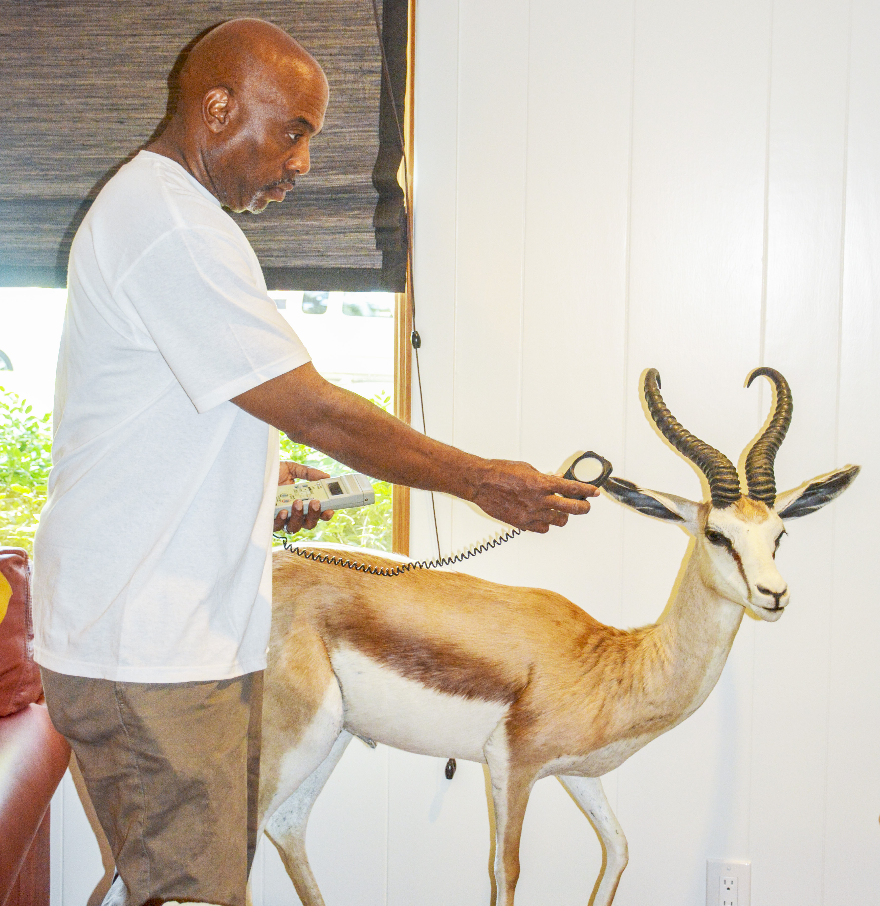
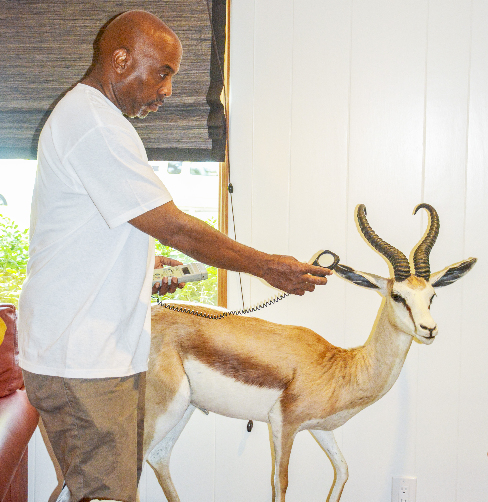

Gallery of Works
Lighting By Design

Lighting By Design
Educate and train future generations the proper techniques of lighting fine works of art.
Work with the educational system and reach out to those who may never get a chance to experience the world of art.


 
